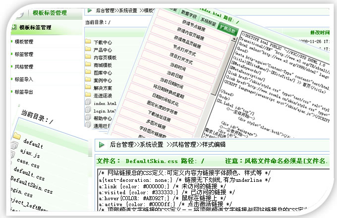
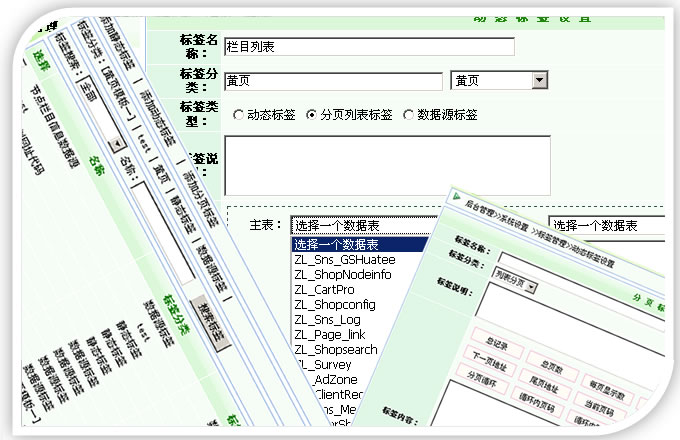
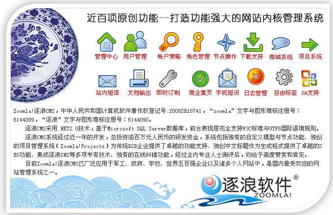

CSDN首页
逐浪官网
技术论坛
新闻
论坛
群组
BLOG
文档
下载
读书
TAG
网摘
搜索
.NET
Java
游戏
视频
人才
外包
培训
数据库
书店
程序员
★感受专业级的网站内核系统|集成SNS|支持Oracle高端数据库-建立起高品质的网站|点此进入逐浪官网免费下载、体验轻松快乐的建站之旅>>
新元发布
高端对话
高峰论坛
一样的SNS
不一样的CMS
媒体报道
视频采访
应用案例
软件架构
客户评价
开发团队
官方网站
寒号鸟计划
★更高性能、更加易用就在选择Zoomla!逐浪CMS★
◇网站建设首选系统|内容管理系统领导者◆更多精彩请点击或鼠标移动向右浏览→
无限制节点让网站不断成长
自由模型任意功能自主DIY
史前最方便的模板引擎
功能强大的自由标签
丰富的商城网店应用
专注效率-专为门户构建
首创集成SNS开创新元
开放式计算让应用更精彩
同步支持MSSQL与Oracle
最专业的开发技术支持
免费下载逐浪
购买商业授权
查看资质证件
联系逐浪软件
←返回左边浏览
更强大:无限制节点让网站不断成长
让网站成长不再遭受天花顶
大型网站应用中，栏目的管理致关重要。Zoomla!逐浪CMS首创的导入节点树理念开发，支持无限制的节点目录结构，让网站成长与栏目架构不受限制。同时，基于Ajax的设计，方便的结织目录树结构，
点此进入逐浪软件产品中心。
更自由:自由模型任意功能自主DIY
面向开发的专业级CMS
还在为新增的一个功能发愁？在Zoomla!逐浪CMS的应用中，任何功能可以自由的定义，等同于后台随心所欲的“编程”，而不再为漫长的开发周期和新增的需求烦恼。
点此查看逐浪软件专业解决方案。
更方便:史前最方便的模板引擎
只要掌握三成WORD操作技巧就会高级网站开发-专为初学者和草根站长设计！
网站的界面决定用户的体验，在强大的内核上可以自由设计后台风格与模板，随心所欲的给网站穿“新衣”，方便易用，
同时您还可以点此进入逐浪官网下载模板。

更便捷:功能强大的自由标签
自由组织您的数据与用户体验！
自由的抽取标签、开放式应用，而不再是处处受限、无法扩展--因为您选择的是基于开放计算的Zoomla!逐浪CMS!
点此进入逐浪软件团队开发博客。

更灵敏:丰富的商城网店应用
专为本土商家打造的诸多精彩应用
完全基于本土商家的应用模型开发的商城、网店系统，利用逐浪CMS可以快速、轻松的构建起您的网络商业体系，轻轻松松做互联网时代的掘金人。
点此查看逐浪软件团队的官方新闻更新。
更高效:专注效率-专为门户构建
迄今为止功能最强大的门户建站套餐
集成商城、网店、项目管理、客户管理、访问统计、调查问券、SNS、黄页等诸多系统，逾百项功能，打造站长贴心的万能网站开发工具箱。
点此了解逐浪软件的官方介绍。
更新颖:首创集成SNS开创新元
为二次开发和运算提供便捷的条件
融合社区的力量，国内首个集成SNS功能的高品质CMS，
点此进入逐浪软件演示中心，任君鉴赏。
更开放:开放式计算让应用更精彩
为二次开发和运算提供便捷的条件
任何用户都可以对逐浪CMS进行良好的整合和API开发，扩展不再费神、与原有系统得到更好的承接。
点此进看逐浪软件的案例精选，
点此进入逐浪软件开发者论坛社区共享交流。

更高能:同步支持MSSQL与Oracle
国内首家同时支持两大高级数据库的大型CMS
数据库平台决定网站的扩展，军工级数据库底层开发，造就了逐浪CMS的坚固品质！
欢迎您点此浏览逐浪软件团队照片，感受成熟、快乐的我们--专业生产卓越智慧。
更专业:最专业的开发技术支持
十年WEB开发与算法研究经验团队呖血打造
专业--源于逐浪软件对于品质的不懈追求，更源于无数客户的支持，
点此进入逐浪软件更新与下载列表。
网站简介－
广告服务
－
VIP资费标准
－
银行汇款帐号
－
网站地图
－
帮助
－
联系方式
－
诚聘英才
－
English
－
问题报告
世纪乐知（北京）网络技术有限公司 版权所有京 ICP 证 020026 号 北京创新乐知广告有限公司 提供技术支持 Copyright © 2000-2007, CSDN.NET, All Rights Reserved